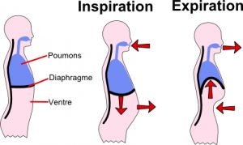

La respiration par le ventre ou RESPIRATION ABDONMINALE permet à notre DIAPHRAGME.
Sur l’INSPIRATION de s’abaisser, afin que se remplissent le bas des poumons.
Sur l’EXPIRATION de remonter en permettant aux poumons de se vider.
Le diaphragme thoracique est un des muscles les plus importants du corps ; il est situé sous les poumons et sépare le thorax et l’abdomen.
La respiration diaphragmatique agit sur le système nerveux parasympathique qui va diminuer le rythme cardiaque et la fréquence respiratoire.
Le corps et le cerveau sont bien oxygénés.
Les muscles se détendent et l’esprit s’apaise.